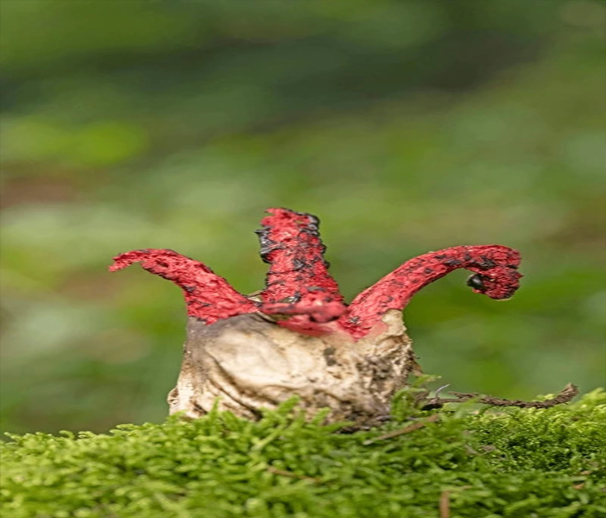
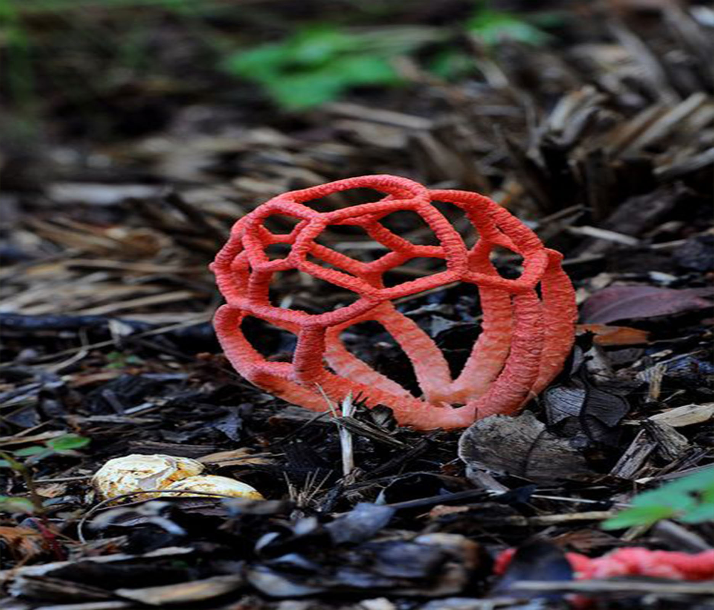
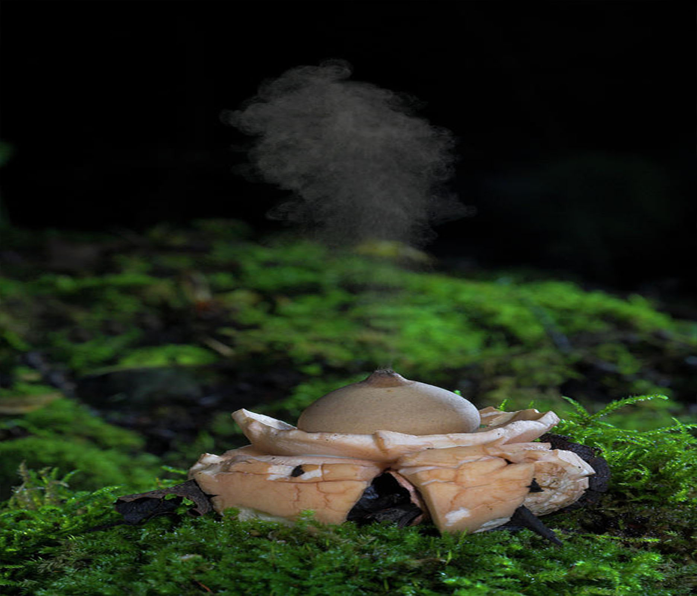
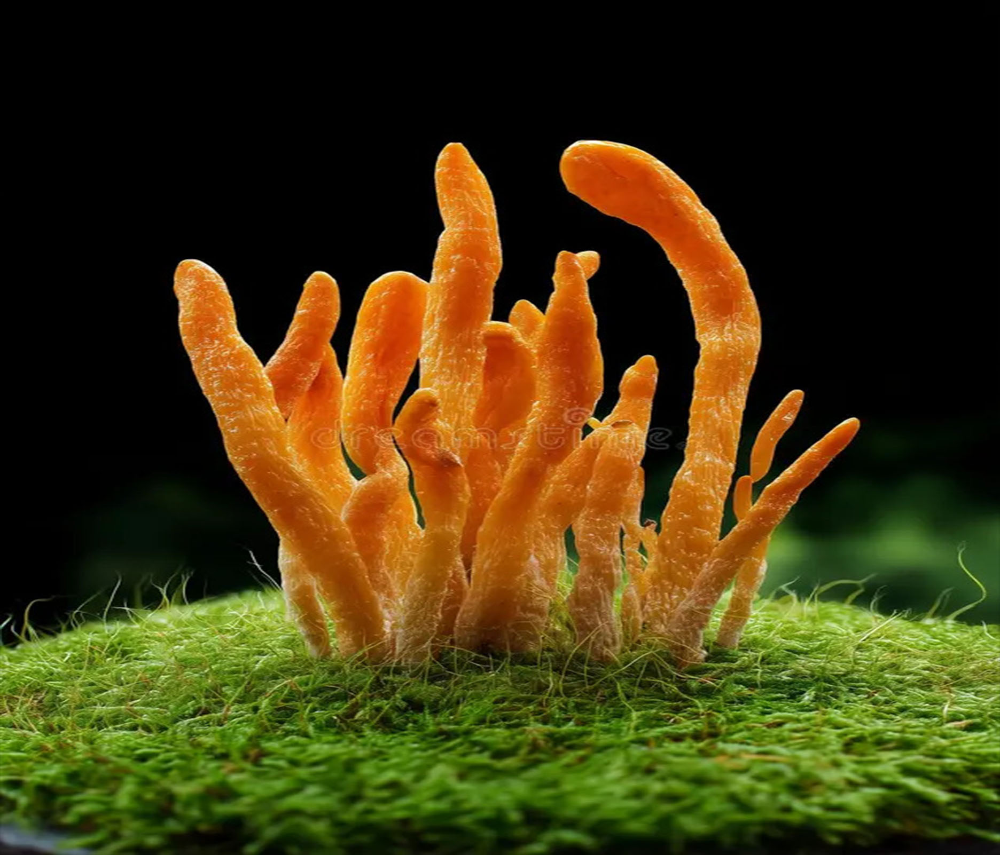

Космічні прибульці (Дивні форми):

Антурус Арчера (Гриб-восьминіг)
Антурус Арчера (Гриб-восьминіг)
Антурус Арчера (Гриб-восьминіг)-Цей гриб виглядає як істота з іншої планети. Спочатку він схожий на біле яйце, але коли «дозріває», з нього вириваються 4–8 яскраво-червоних щупалець, вкритих темним слизом. Окрім дивного вигляду, він має дуже сильний запах, що нагадує зіпсоване м’ясо. Це його хитрий план: так він приваблює мух, які розносять його спори на своїх лапках по всьому лісу.

Решіточник червоний
Решіточник червоний
Решіточник червоний-Один із найнезвичайніших грибів, що нагадує витончену геометричну структуру або червону сітчасту кулю. У нього немає звичної ніжки чи капелюшка — він росте у вигляді складного решітчастого каркаса. Його колір настільки яскравий, що його легко помітити здалеку. Але будь обережний: гриб дуже токсичний і має неприємний запах, тому милуватися ним краще тільки здалеку або на екрані.

Земляна зірка (Geastrum)
Земляна зірка (Geastrum)
Земляна зірка (Geastrum)-Цей гриб — справжній трансформер. Коли він виходить із землі, його зовнішня оболонка розривається на декілька променів, які загинаються вниз, піднімаючи центральну частину гриба вгору. Це робить його схожим на зірку, що впала в ліс. Якщо наступити на таку «зірку» або якщо на неї впаде крапля дощу, вона випустить хмаринку спор через отвір зверху, наче маленький вулкан.
Світло та Темрява (Біолюмінісценція та токсини):

Міцена хлорофос (Світний гриб)
Міцена хлорофос (Світний гриб)
Міцена хлорофос (Світний гриб)-Справжнє природне диво, що володіє магією біолюмінесценції. Ці маленькі гриби випромінюють м’яке неоново-зелене світло в нічний час. Найяскравіше вони світяться, коли температура повітря становить рівно 27 градусів. Вчені вважають, що світло приваблює нічних комах, які допомагають грибу поширювати спори в густих тропічних джунглях, де майже немає вітру.

Гіднеллум Пека (Кровоточивий зуб)
Гіднеллум Пека (Кровоточивий зуб)
Гіднеллум Пека (Кровоточивий зуб)-Гриб, який виглядає як кадр із фільму жахів. На його білосніжній оксамитовій поверхні виступають краплі яскраво-червоної рідини, дуже схожої на кров. Насправді це особливий сік, який гриб виштовхує через надлишок вологи. Незважаючи на назву, він не отруйний, але неймовірно гіркий на смак. Для лісу він дуже корисний, бо має антибактеріальні властивості та допомагає деревам рости.

Голубий гриб (Entoloma hochstetteri)
Голубий гриб (Entoloma hochstetteri)
Голубий гриб (Entoloma hochstetteri)-Цей гриб здається казковим завдяки своєму неймовірному небесно-блакитному кольору. Такий відтінок йому надають особливі пігменти — азулени, які рідко зустрічаються в живій природі. Він настільки унікальний, що в Новій Зеландії його навіть зобразили на грошовій купюрі в 50 доларів. Хоча він виглядає гарно, їсти його не можна — вчені досі не впевнені, наскільки він токсичний.
Корисні та Розумні (Еко-зв'язки):

Кордицепс (Гриб-узурпатор)
Кордицепс (Гриб-узурпатор)
Кордицепс (Гриб-узурпатор)-Найвідоміший гриб-паразит у світі, який став натхненням для багатьох ігор та фільмів. Він вражає комах і починає керувати їхньою поведінкою, змушуючи жертву підніматися якомога вище на рослини. Коли комаха гине, гриб проростає прямо крізь її тіло, випускаючи довгий відросток зі спорами. У природі він працює як важливий регулятор, що не дає одному виду комах розмножитися занадто сильно.

Трюфель чорний
Трюфель чорний
Трюфель чорний-Найдорожчий і найскритніший мешканець підземного світу. Трюфелі не ростуть на поверхні, а ховаються серед коріння дерев на глибині до 30 сантиметрів. Вони утворюють складний союз із деревами, допомагаючи їм добувати воду та мінерали. Оскільки люди не можуть побачити їх очима, для пошуку цих «чорних діамантів» використовують спеціально навчених собак або свиней, які відчувають їхній сильний аромат.

Їжовик гребінчастий (Левова грива)
Їжовик гребінчастий (Левова грива)
Їжовик гребінчастий (Левова грива)-Цей гриб не схожий на жоден інший — у нього немає пластинок, зате є довгі білі «бурульки», що звисають вниз, роблячи його схожим на пухнасту білу шубу або бороду дідуся. Він росте на стовбурах листяних дерев. Окрім дивного вигляду, цей гриб дуже цінується в медицині: вчені довели, що він допомагає відновлювати клітини мозку та покращує пам’ять і увагу.
Цікаві факти про кожен з грибів:
1. Антурус Арчера: Коли гриб тільки вилуплюється з «яйця», він росте зі швидкістю кілька сантиметрів на годину.
2. Решіточник червоний: У багатьох культурах цей гриб вважали «інопланетним посланням» через його ідеальну геометричну форму.
3. Земляна зірка: Цей гриб працює як барометр: він розкриває свої «промені» тільки за певної вологості повітря.
4. Міцена хлорофос: Світло цього гриба настільки яскраве, що при ньому можна було б прочитати кілька слів у повній темряві.
5. Гіднеллум Пека: Червоний сік цього гриба містить речовину — атроментин, яка за властивостями схожа на ліки для розрідження крові.
6. Голубий гриб: Його колір настільки стійкий, що він не зникає навіть після того, як гриб висохне.
7. Кордицепс: Цей гриб може змінити всю екосистему лісу, якщо якийсь вид комах почне розмножуватися занадто швидко.
8. Трюфель: Найдорожчий трюфель у світі був проданий на аукціоні за 330 000 доларів — як розкішна квартира!
9. Їжовик гребінчастий: У Японії вірять, що цей гриб дарує «залізну пам'ять», тому його часто їдять студенти перед іспитами.